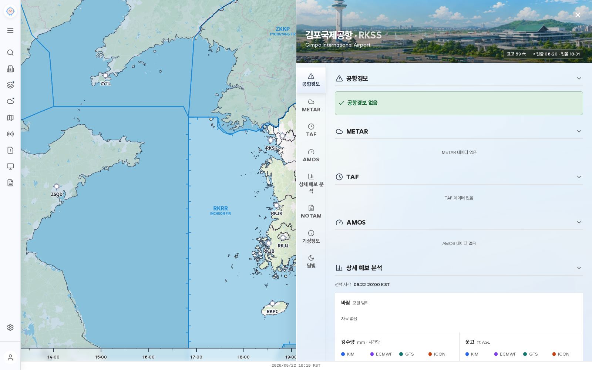

01 · 화면은 그대로, 대화창만 위에
지도와 오른쪽 자료의 위치·크기를 바꾸지 않습니다. 배경을 어둡게 하는 막이나 전체 화면 클릭 차단도 없습니다.
실제 프로젝트 원본 화면 위에 떠 있는 창 · 지도를 줄이거나 자료 패널을 밀지 않습니다.

캡처 파일을 찾지 못했습니다. HTML과 assets/ai-copilot-ui 폴더를 함께 열어 주세요.
지도와 오른쪽 자료의 위치·크기를 바꾸지 않습니다. 배경을 어둡게 하는 막이나 전체 화면 클릭 차단도 없습니다.
기본 위치는 오른쪽 아래. 헤더를 잡고 이동하거나 방향키로 옮기세요. 확대 버튼으로 대화를 넓혀 읽고, 버튼 한 번으로 원래 위치에 돌려놓을 수 있습니다.
접으면 작은 AI 대화 버튼만 남습니다. 대화·입력 중인 질문·스크롤 위치는 유지합니다. 이 시안의 배경은 캡처이고, 대화만 조작 가능합니다.